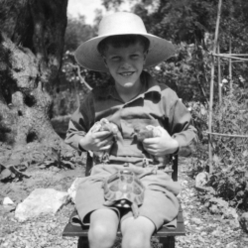

Gerald Malcolm Durrell
7 January 1925 – 30 January 1995

Gerald Malcolm Durrell was a British naturalist, zookeeper, conservationist, author and television presenter. He founded what is now called the Durrell Wildlife Conservation Trust and the Jersey Zoo on the Channel Island of Jersey in 1959. He wrote a number of books based on his life as an animal collector and enthusiast.
- The Overloaded Ark (1953)
- The Bafut Beagles (1954)
- Three Singles to Adventure aka Tickets to Adventure (1954)
- The Drunken Forest (1956)
- Encounters with Animals (1958)
- A Zoo in My Luggage (1960)
- Island Zoo (1961)
- Look At Zoos (1961)
- The Whispering Land (1961)
- Menagerie Manor (1964)
- Two in the Bush (1966)
- Catch Me a Colobus (1972)
- Beasts in My Belfry aka A Bevy of Beasts (1973)
- The Stationary Ark (1976)
- Golden Bats and Pink Pigeons (1977)
- The Picnic and Suchlike Pandemonium (1979)
- The Amateur Naturalist (1982)
- Ark On the Move (1983)
- How to Shoot an Amateur Naturalist (1984)
- Durrell in Russia (1986)
- The Ark's Anniversary (1990)
- The Aye-aye and I (1992)